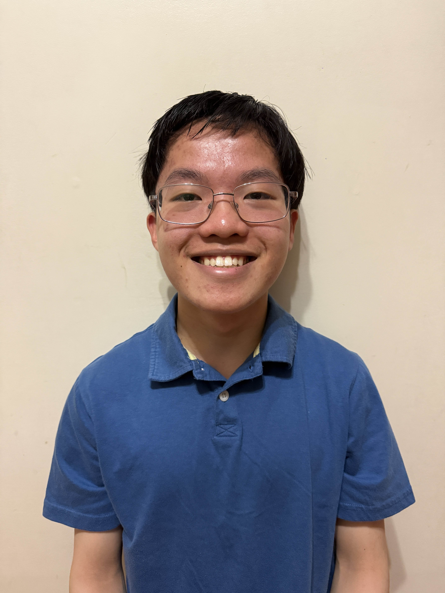

About
I’ve always had big aspirations, from being a professional chef to a NASA engineer. This puzzled my parents greatly. To them, the gap between the many disparate career paths I had explored was unbridgeable. To me, however, they were two sides of the same coin: the pursuit of understanding the world through discovery and experiences. Whether I was learning my grandmother’s newest recipe or replicating experiments I saw on the internet, I wasn’t just chasing a career, I was chasing the joy of learning something new. I simply loved to learn.
As I matured, my curiosity found its permanent home at the intersection of mathematics and computer science. I am deeply drawn to these fields because they offer a unique, infinite frontier of discovery. They provide a challenging environment where the knowledge base evolves more rapidly than any individual can study. For a lifelong learner like myself, the realization that I will never be truly “done” learning more is not a source of frustration, rather a continuing motivation never to slow down. My drive to understand mathematics and computer science has ultimately narrowed my focus towards AI and machine learning, which utilize the advanced mathematical and computational techniques that I continue to develop today. Specifically, I aim to pursue research in computer vision and robotics, as these disciplines represent the frontier of our understanding of AI, where many abstract concepts are ultimately utilized.
My goal is to spend my career at the edge of what is known about machine learning and AI, developing autonomous digital agents and physical machines to navigate their environments and aid humans in an intelligent manner. Hopefully, my work will inspire future generations to pursue mathematics and computer science like me, exponentially improving our understanding of technology and the world around us.
Program interests
- Data-science directions: Text Mining and Natural Language Processing (NLP), Market Analysis and Forecasting
- Drug-development stage: 🏭 7. Digital Infrastructure, Automation & IT Systems
- Programming level: Advanced
- Tools and platforms: Obsidian(https://obsidian.md/), Cursor/VScode (https://github.com/ds4cabs/PharmaBioinfomatics/issues/78), Github Personal Website Development (https://github.com/), Design flyer using Canva (https://www.canva.com/)